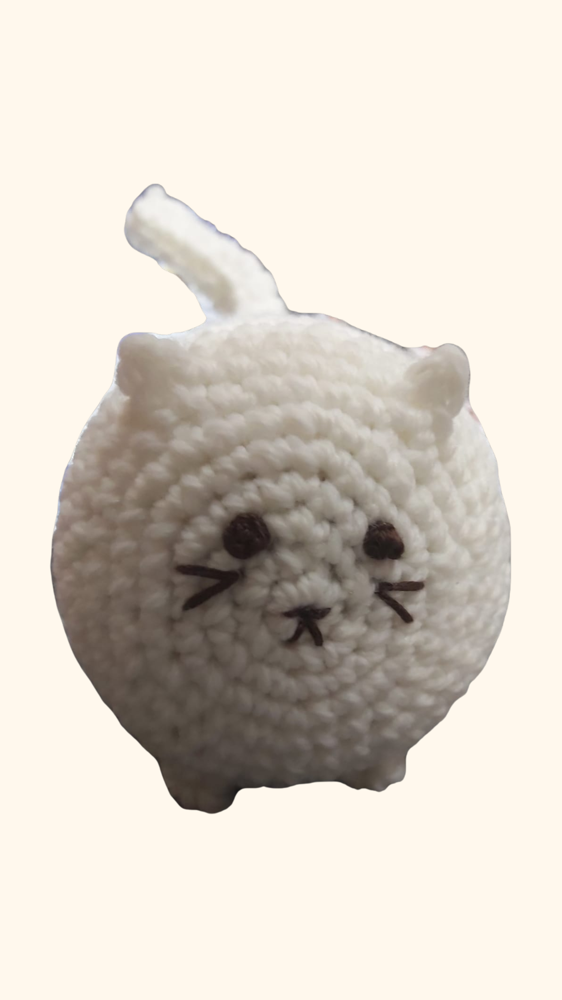
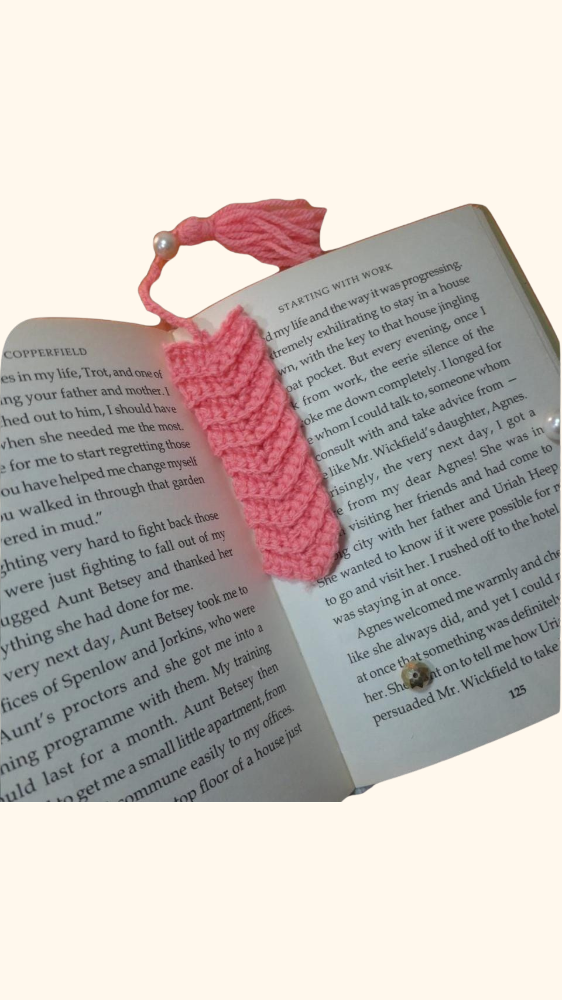
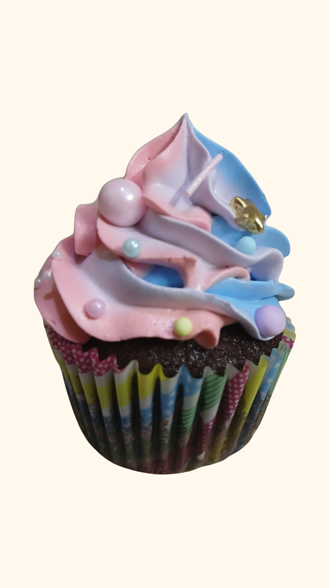
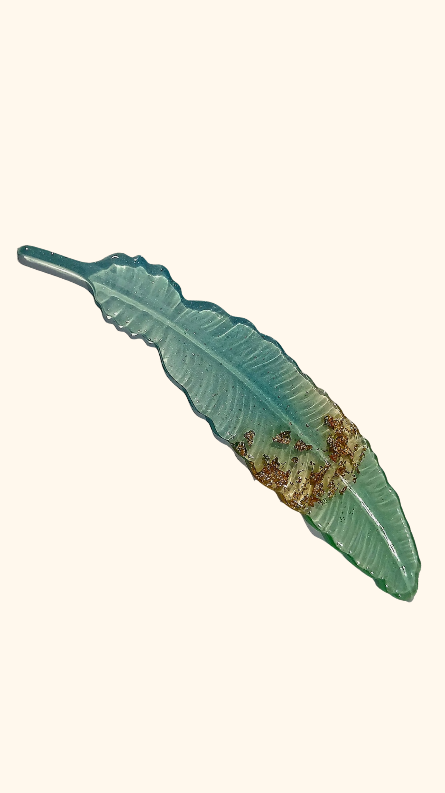
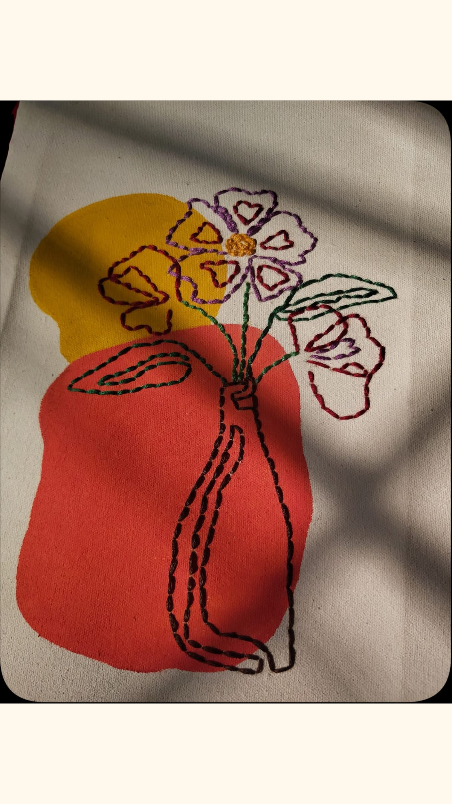

01 Crochet
Crochet is one of my favorite creative activities. I enjoy experimenting with different colors, patterns, and designs to create handmade pieces.
Creativity • Patience • Detail
02 Reading
Reading gives me an opportunity to explore new ideas, stories, and perspectives. It is also one of the ways I relax and spend my free time.
Stories • Ideas • Learning


03 Baking
I enjoy baking cakes, brownies, cookies, and other desserts. Baking allows me to combine creativity with patience and attention to detail.
Recipes • Creativity • Experimentation
04 Resin Crafts
Resin crafting lets me experiment with colors, flowers, textures, and different designs to create unique handmade pieces.
Design • Color • Experimentation


05 Painting
Painting gives me a way to express ideas through colors, shapes, and different artistic techniques. I enjoy experimenting and creating artwork from simple concepts.
Colors • Expression • Art